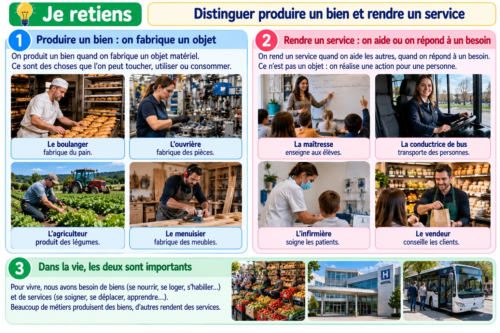

Distinguer produire un bien et rendre un service
Certaines activités fabriquent des objets ou des aliments ; d’autres rendent un service.
Distinguer produire un bien et rendre un service

Planche pédagogique composée d’images photoréalistes illustratives.
Produire un bien
Un bien est quelque chose de matériel : du pain, une chaise, un vêtement ou un vélo. Le boulanger fabrique du pain ; l’artisan peut fabriquer un meuble.
Rendre un service
Un service est une action utile à une personne. Le médecin soigne, le chauffeur transporte et le coiffeur coupe les cheveux.
Des activités qui se complètent
Pour vendre du pain, il faut d’abord produire le blé et la farine, puis fabriquer le pain et le vendre. Produire un bien et rendre un service peuvent donc être liés.
Je retiens
Produire un bien, c’est obtenir ou fabriquer quelque chose de matériel. Rendre un service, c’est réaliser une action utile à quelqu’un.